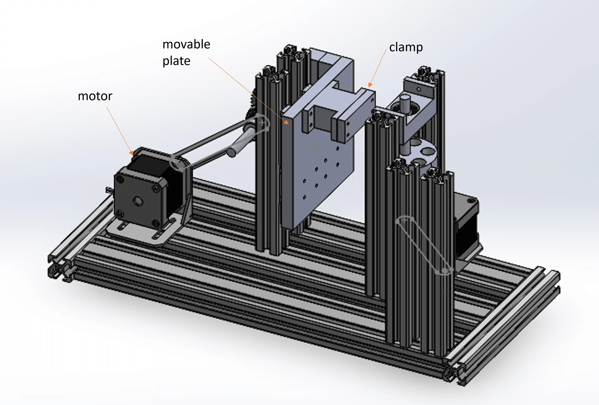
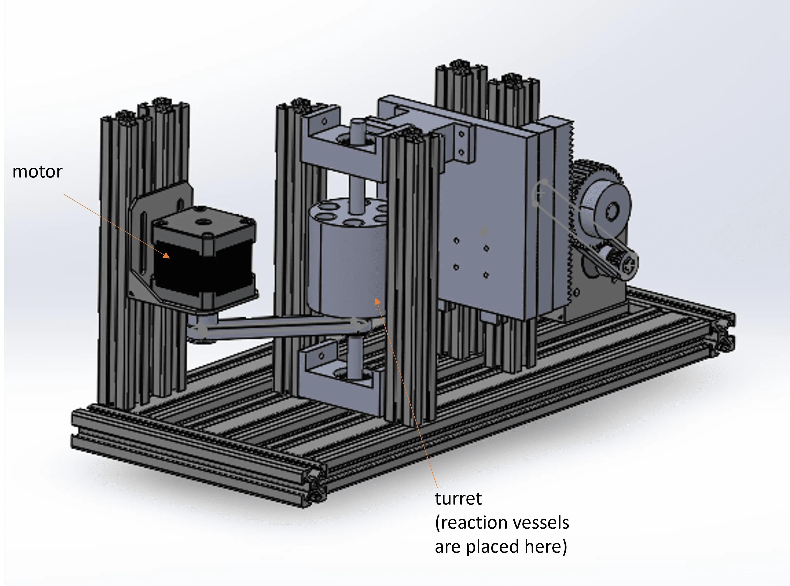

Motivation
This year the project aimed to construct an enzymatic de novo DNA synthesis for data storage. Since our motivation is using it for the long-term storage of huge amounts of data, a high level of automation is crucial. Of course, there are already existing devices for DNA synthesis, but the already well-engineered devices for the traditional phosphoramidite synthesis rely on a fundamentally different principle while newer approaches for enzymatical DNA syntheses have major drawbacks when it comes to the synthesis of long strands. Due to these reasons, we decided to construct a new hardware from scratch that is specially adapted to our needs. For the commercial application, also an optimization towards a fast and cheap operation should remain possible.
DIPsy

Figure 2: DIPsy Front.
Initially, our work was very much based on George Church's paper on DNA synthesis for data storage. We wanted to replicate the flow cell with light pulses to control the reaction. However, we discarded the idea of the light-driven reaction after Church shared his experience with us and advised against it. This would not be the simplest method, but this was our requirement for the hardware. It should be kept as simple as possible so that it can be reproduced well. When Sabastian Palluk as well told us about his bad experiences with the flow cell, it was clear to us that we had to take a completely new approach. Fortunately, a comment from Prof. Blank gave us the idea of the DIP method. The DIP method allowed us to take a whole new approach to automate DNA synthesis. To make it easy to replicate, we kept the setup as basic as possible.
To implement our idea of the hardware, we used standardized aluminum profiles as a base, to which the individual components were movably attached. Both the turret and the moving arm are driven by a stepper motor via a toothed belt. These motors are controlled by a computer to match the desired DNA sequence. Most of the components are commercially available. The revolver and the holder of the rod were printed with a 3D printer. The four reaction vessels with the finished reaction solution and one nucleotide each are placed in the turret, as well as two reaction vessels with wash solution. The DNA primers are immobilized on a rod, which can be dipped into the various solutions via an arm. We prototyped our idea into a 3D model shown in figure 1. During the assembly we noticed that we could build DIPsy more compact, so we did some changes.

Figure 3: Labeled hardware model front.

Figure 4: Labeled hardware model back.
This arrangement of the reaction vessels ensures that the incorporation of the nucleotides happens efficiently. Each nucleotide incorporation must be followed by a wash step, the two opposing reaction vessels with wash solution ensure that each reaction solution has a direct neighbor for washing, while the number of holes for the reaction vessels has been kept as small as possible. This keeps the distances between the individual steps as short as possible.
This is how to operate the hardware:
- Connect the device to the power
- Log in to the WLAN network
- Calibrate the device
- Enter the base sequence to be synthesized in the text field
Outlook
We were able to build a device with which the method developed in this project for enzymatic DNA synthesis can run fully automatically. A network connection was also implemented through which digital data can be directly compiled into a base sequence and synthesized into a DNA strand. Of course, much can be improved on this fundamental design of the hardware. For example, the overall design could be made even more compact, and a casing with cooling would be beneficial. Furthermore, use could be made easier with LCD displays showing status. Data would be sent to the device, it would calibrate itself and the status of the operation would be read on the display. This handling would be made even easier by a REST API (Standardized Programming Interface), which would directly link the software and hardware code.
Here you can find our Schematic